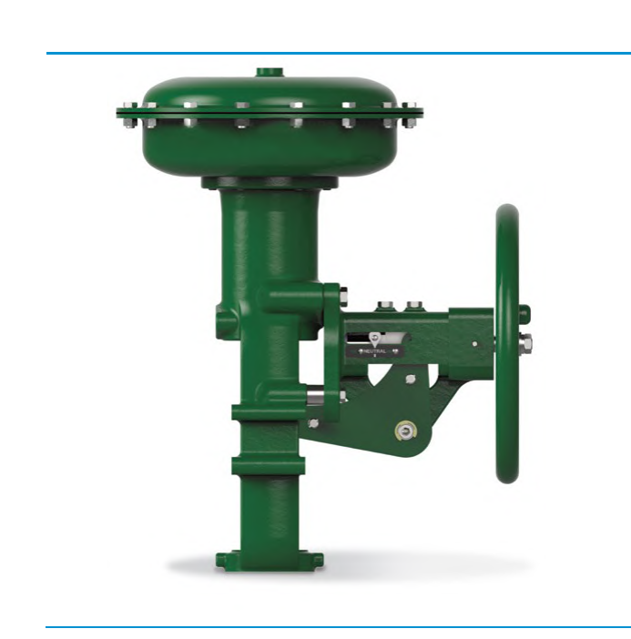
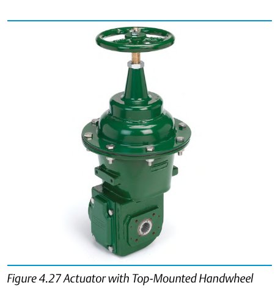

Manual-Override Handwheel — Side vs. Top Mounting
Side-Mounted

A manual-override mechanism for operating the actuator without pneumatic supply, mounted where lateral clearance at the yoke or actuator housing allows it.
Top-Mounted

The same manual-override function from the top of the actuator stack, the mounting choice where overhead clearance is available rather than lateral clearance — commonly doing double duty as a travel stop as well as a means of manual or emergency operation.
After Control Valve Handbook, 6th ed., Figs. 4.26 & 4.27 — used directly. Component Index: cvh-cmp-actuator-side-handwheel, cvh-cmp-actuator-top-handwheel.